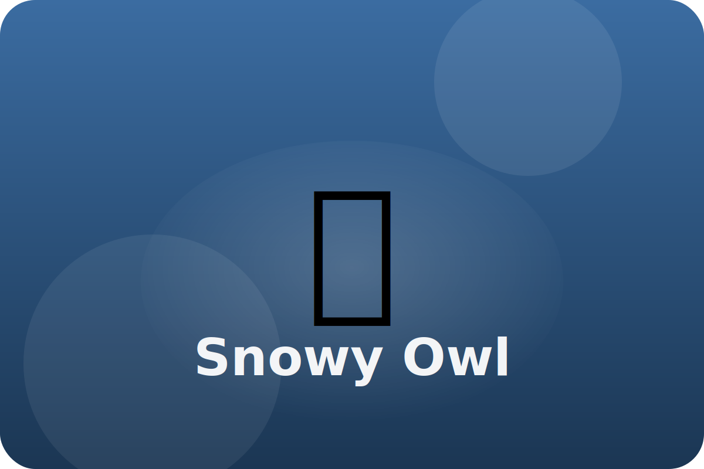

Tundra
Feathers from head to talon
Snowy owls sit on mounds watching for small mammals. They hunt during the day when the sun never sets.
Soft Feathers
Feathers cover even their toes, keeping them warm and making their flight whisper-quiet.
Sharp Hearing
Face feathers form a circle that funnels sound right to the owl's ears.
Sun Loving
Unlike most owls, snowy owls hunt in daylight, using bright yellow eyes to spot prey.
Keep exploring the Snowy Owl
Watch the Snowy Owl in action
Snowy Owls Facts for Kids